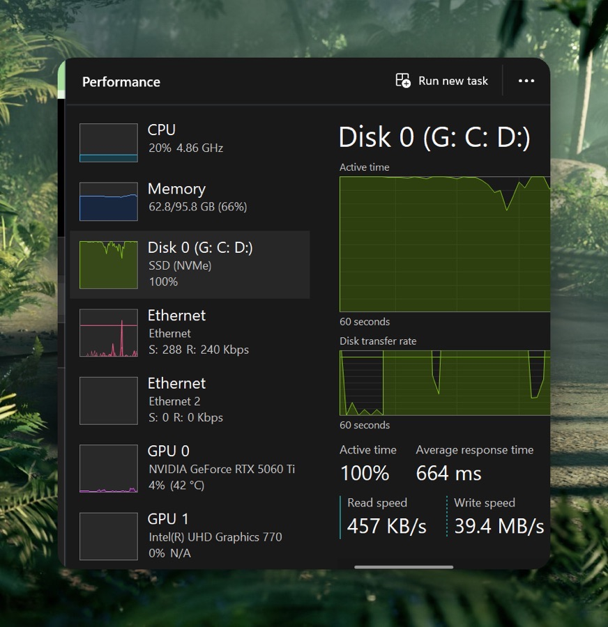

How it worksCách hoạt động
One verdict for a machine shared by many agents.Một kết luận cho chiếc máy nhiều agent dùng chung.
host-watcher measures CPU, memory, disk and free space, tells every coding agent the same thing, and makes heavy commands wait their turn. Local only.host-watcher đo CPU, bộ nhớ, ổ đĩa và dung lượng trống, báo cùng một thông tin cho mọi coding agent, và cho lệnh nặng chờ đến lượt. Chạy hoàn toàn cục bộ.
throttle
Illustrative values, not a real machine.Số liệu minh hoạ, không phải máy thật.
The problemVấn đề
Run five agents in five worktrees and they all start npm install, test suites and builds at the same moment. The disk saturates, everything slows down, and nobody can tell which job did it. host-watcher measures the machine, tells every agent the same thing, and lets heavy commands wait their turn. It runs locally: no network, no telemetry, no database, no required daemon.
Chạy năm agent trong năm worktree, cả năm cùng lúc bắt đầu npm install, test và build. Ổ đĩa quá tải, mọi thứ chậm lại, và không ai biết job nào gây ra. host-watcher đo tình trạng máy, báo cùng một thông tin cho mọi agent, và cho các lệnh nặng chờ đến lượt. Mọi thứ chạy cục bộ: không gọi mạng, không telemetry, không database, không bắt buộc chạy daemon.

Real host · 18 parallel sessionsMáy thật · 18 session song song
CPU sits at 20% and memory at 66%, so a CPU-only check says "fine". Meanwhile the NVMe disk is 100% active with a 664 ms average response time, while writing only 39 MB/s. Every agent waits on I/O. This is the contention host-watcher is built to catch: it reads active time and latency, not throughput, and this machine would get hold.
CPU chỉ 20%, bộ nhớ 66%, nên nếu chỉ nhìn CPU thì tưởng máy vẫn ổn. Trong khi đó ổ NVMe bận 100%, thời gian phản hồi trung bình 664 ms, dù chỉ ghi 39 MB/s. Mọi agent đều đứng chờ I/O. Đây chính là kiểu tranh chấp host-watcher được làm ra để bắt: nó đọc thời gian bận và độ trễ chứ không đọc throughput, và máy này sẽ nhận kết luận hold.
ArchitectureKiến trúc
One optional watcher samples the OS and writes a snapshot. Everything else reads that snapshot, so ten agents asking "is the machine busy?" cost nothing. Without a watcher, host_status.py and the gate sample on their own.
Một watcher (tuỳ chọn) đọc số liệu từ hệ điều hành và ghi ra một snapshot. Mọi thành phần khác chỉ đọc snapshot đó, nên mười agent cùng hỏi "máy có đang bận không?" cũng gần như không tốn gì. Khi không có watcher, host_status.py và gate sẽ tự đo.
Five verdictsNăm kết luận
Severity order: go < throttle < unknown < clean < hold. The worst signal wins. Every verdict exits 0, so scripts read the verdict, not the exit code.
Thứ tự mức độ: go < throttle < unknown < clean < hold. Tín hiệu tệ nhất quyết định kết luận. Mọi kết luận đều trả exit code 0, nên script cần đọc kết luận chứ không dựa vào exit code.
How a verdict is decidedKết luận được quyết định thế nào
Only disk active time and latency count. A fast sequential copy at high throughput is not contention; queued I/O waiting on the disk is. All thresholds live in config.json (see configuration).
Với ổ đĩa, chỉ thời gian bận (active time) và độ trễ (latency) được tính. Một lệnh copy tuần tự nhanh, throughput cao, không phải là tranh chấp; I/O phải xếp hàng chờ ổ đĩa mới là tranh chấp. Mọi ngưỡng nằm trong config.json (xem configuration).
The gateGate
$ python scripts/host_gate.py -- npm run build
The gate never refuses to run. It waits only on hold and clean, backs off 15 → 30 → 60 seconds, then starts the command at low priority and passes its exit code and signals through. If the status cannot be read, it runs immediately.
Gate không bao giờ từ chối chạy lệnh. Nó chỉ chờ khi kết luận là hold hoặc clean, giãn thời gian chờ 15 → 30 → 60 giây, sau đó chạy lệnh ở mức ưu tiên thấp và chuyển tiếp nguyên exit code và tín hiệu. Nếu không đọc được trạng thái máy, nó chạy ngay.
Worktree inboxInbox theo worktree
The watcher maps the heaviest I/O process to its git worktree and leaves a notice only for that worktree, so the agent that caused the pressure is the one asked to slow down. Needs per-process I/O: Linux, or Windows with the Go watcher.
Watcher tìm process đang ghi/đọc đĩa nhiều nhất, xác định nó thuộc git worktree nào, rồi chỉ để lại thông báo cho đúng worktree đó. Nhờ vậy agent gây ra áp lực là agent được nhắc chậm lại. Tính năng này cần số liệu I/O theo từng process: có trên Linux, và trên Windows khi dùng watcher bản Go.
Safe cache cleanupDọn cache an toàn
Shared package caches (npm, pip, Go, Cargo…) are only listed with their own prune command; host-watcher never deletes them. See cleanup safety.
Các cache dùng chung của trình quản lý gói (npm, pip, Go, Cargo…) chỉ được liệt kê kèm lệnh dọn riêng của chúng; host-watcher không bao giờ tự xoá. Xem cleanup safety.
Platform supportNền tảng hỗ trợ
| Linux | WSL | Windows | macOS | |
|---|---|---|---|---|
| CPU · memory | ✓ | ✓ | ✓ | ✓ |
| Disk active / latencyĐộ bận / độ trễ ổ đĩa | ✓ | virtual diskổ ảo | ✓ | — |
| Free spaceDung lượng trống | ✓ | ✓ | ✓ | ✓ |
| Worktree inboxInbox theo worktree | ✓ | ✓ | Go watcherwatcher bản Go | — |
Details in platform support.
Chi tiết trong platform support.
Quick startBắt đầu nhanh
$ git clone https://github.com/bestagentkits/host-watcher $ cd host-watcher $ python scripts/host_status.py $ python scripts/host_watch.py --detach $ python scripts/host_gate.py -- npm run build $ python scripts/cache_cleanup.py --dry-run
Hooks for Claude Code, Pi, Codex and others: integrations. Prebuilt Go binaries: releases.
Hook cho Claude Code, Pi, Codex và các agent khác: integrations. Binary Go dựng sẵn: releases.